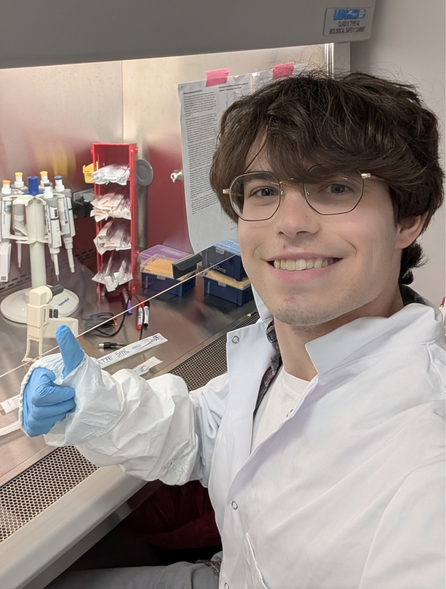

<!DOCTYPE html>
<html xmlns="http://www.w3.org/1999/xhtml" lang="en" xml:lang="en"><head>

<meta charset="utf-8">
<meta name="generator" content="quarto-1.9.37">

<meta name="viewport" content="width=device-width, initial-scale=1.0, user-scalable=yes">


<title>Owen Karmel – Owen’s Website</title>
<style>
/* Default styles provided by pandoc.
** See https://pandoc.org/MANUAL.html#variables-for-html for config info.
*/
code{white-space: pre-wrap;}
span.smallcaps{font-variant: small-caps;}
div.columns{display: flex; gap: min(4vw, 1.5em);}
div.column{flex: auto; overflow-x: auto;}
div.hanging-indent{margin-left: 1.5em; text-indent: -1.5em;}
ul.task-list{list-style: none;}
ul.task-list li input[type="checkbox"] {
  width: 0.8em;
  margin: 0 0.8em 0.2em -1em; /* quarto-specific, see https://github.com/quarto-dev/quarto-cli/issues/4556 */ 
  vertical-align: middle;
}
</style>


<script src="site_libs/quarto-nav/quarto-nav.js"></script>
<script src="site_libs/quarto-nav/headroom.min.js"></script>
<script src="site_libs/clipboard/clipboard.min.js"></script>
<script src="site_libs/quarto-search/autocomplete.umd.js"></script>
<script src="site_libs/quarto-search/fuse.min.js"></script>
<script src="site_libs/quarto-search/quarto-search.js"></script>
<meta name="quarto:offset" content="./">
<script src="site_libs/quarto-html/quarto.js" type="module"></script>
<script src="site_libs/quarto-html/tabsets/tabsets.js" type="module"></script>
<script src="site_libs/quarto-html/popper.min.js"></script>
<script src="site_libs/quarto-html/tippy.umd.min.js"></script>
<link href="site_libs/quarto-html/tippy.css" rel="stylesheet">
<link href="site_libs/quarto-html/quarto-syntax-highlighting-7f8f88aac4f3542376d5c11b86a4c14d.css" rel="stylesheet" id="quarto-text-highlighting-styles">
<script src="site_libs/bootstrap/bootstrap.min.js"></script>
<link href="site_libs/bootstrap/bootstrap-icons.css" rel="stylesheet">
<link href="site_libs/bootstrap/bootstrap-a0f9fd0d421825b736dc1bbcbcba2219.min.css" rel="stylesheet" append-hash="true" id="quarto-bootstrap" data-mode="light">
<script id="quarto-search-options" type="application/json">{
  "location": "navbar",
  "copy-button": false,
  "collapse-after": 3,
  "panel-placement": "end",
  "type": "overlay",
  "limit": 50,
  "keyboard-shortcut": [
    "f",
    "/",
    "s"
  ],
  "show-item-context": false,
  "language": {
    "search-no-results-text": "No results",
    "search-matching-documents-text": "matching documents",
    "search-copy-link-title": "Copy link to search",
    "search-hide-matches-text": "Hide additional matches",
    "search-more-match-text": "more match in this document",
    "search-more-matches-text": "more matches in this document",
    "search-clear-button-title": "Clear",
    "search-text-placeholder": "",
    "search-detached-cancel-button-title": "Cancel",
    "search-submit-button-title": "Submit",
    "search-label": "Search"
  }
}</script>


<link rel="stylesheet" href="styles.css">
</head>

<body class="nav-fixed quarto-light">

<div id="quarto-search-results"></div>
  <header id="quarto-header" class="headroom fixed-top">
    <nav class="navbar navbar-expand-lg " data-bs-theme="dark">
      <div class="navbar-container container-fluid">
      <div class="navbar-brand-container mx-auto">
    <a class="navbar-brand" href="./index.html">
    <span class="navbar-title">Owen’s Website</span>
    </a>
  </div>
            <div id="quarto-search" class="" title="Search"></div>
          <button class="navbar-toggler" type="button" data-bs-toggle="collapse" data-bs-target="#navbarCollapse" aria-controls="navbarCollapse" role="menu" aria-expanded="false" aria-label="Toggle navigation" onclick="if (window.quartoToggleHeadroom) { window.quartoToggleHeadroom(); }">
  <span class="navbar-toggler-icon"></span>
</button>
          <div class="collapse navbar-collapse" id="navbarCollapse">
            <ul class="navbar-nav navbar-nav-scroll me-auto">
  <li class="nav-item">
    <a class="nav-link active" href="./index.html" aria-current="page"> 
<span class="menu-text">Home</span></a>
  </li>  
  <li class="nav-item">
    <a class="nav-link" href="./about.html"> 
<span class="menu-text">About</span></a>
  </li>  
</ul>
          </div> <!-- /navcollapse -->
            <div class="quarto-navbar-tools">
</div>
      </div> <!-- /container-fluid -->
    </nav>
</header>
<!-- content -->
<div id="quarto-content" class="quarto-container page-columns page-rows-contents page-layout-article page-navbar">
<!-- sidebar -->
<!-- margin-sidebar -->
    <div id="quarto-margin-sidebar" class="sidebar margin-sidebar">
        <nav id="TOC" role="doc-toc" class="toc-active">
    <h2 id="toc-title">On this page</h2>
  <ul>
  <li><a href="#hello" id="toc-hello" class="nav-link active" data-scroll-target="#hello">Hello!</a></li>
  <li><a href="#education" id="toc-education" class="nav-link" data-scroll-target="#education">Education</a></li>
  <li><a href="#research-experience" id="toc-research-experience" class="nav-link" data-scroll-target="#research-experience">Research Experience</a>
  <ul class="collapse">
  <li><a href="#research-assistant-jiang-lab-cornell-university" id="toc-research-assistant-jiang-lab-cornell-university" class="nav-link" data-scroll-target="#research-assistant-jiang-lab-cornell-university">Research Assistant | Jiang Lab, Cornell University</a></li>
  <li><a href="#engineering-intern-regeneron-pharmaceuticals" id="toc-engineering-intern-regeneron-pharmaceuticals" class="nav-link" data-scroll-target="#engineering-intern-regeneron-pharmaceuticals">Engineering Intern | Regeneron Pharmaceuticals</a></li>
  <li><a href="#research-assistant-cosgrove-lab-cornell-university" id="toc-research-assistant-cosgrove-lab-cornell-university" class="nav-link" data-scroll-target="#research-assistant-cosgrove-lab-cornell-university">Research Assistant | Cosgrove Lab, Cornell University</a></li>
  </ul></li>
  <li><a href="#honors-awards" id="toc-honors-awards" class="nav-link" data-scroll-target="#honors-awards">Honors &amp; Awards</a></li>
  <li><a href="#service-leadership" id="toc-service-leadership" class="nav-link" data-scroll-target="#service-leadership">Service &amp; Leadership</a></li>
  <li><a href="#presentations" id="toc-presentations" class="nav-link" data-scroll-target="#presentations">Presentations</a></li>
  <li><a href="#technical-skills" id="toc-technical-skills" class="nav-link" data-scroll-target="#technical-skills">Technical Skills</a></li>
  </ul>
</nav>
    </div>
<!-- main -->
<div class="quarto-about-trestles">
  <div class="about-entity">
    
<header id="title-block-header" class="quarto-title-block default">
<div class="quarto-title">
<h1 class="title">Owen Karmel</h1>
</div>
<div class="quarto-title-meta">
  </div>
</header>
    <div class="about-links">
  <a href="https://linkedin.com/in/owen-karmel-b067a6280/" class="about-link" rel="" target="">
    <i class="bi bi-linkedin"></i>
     <span class="about-link-text">LinkedIn</span>
  </a>
  <a href="mailto:obk9@cornell.edu" class="about-link" rel="" target="">
    <i class="bi bi-envelope"></i>
     <span class="about-link-text">Email</span>
  </a>
</div>
  </div>
  <div class="about-contents"><main class="content" id="quarto-document-content">

<section id="hello" class="level2">
<h2 data-anchor-id="hello">Hello!</h2>
<p>I’m Owen. I’m a Senior at <strong>Cornell University</strong> studying physics and biology. I wnat to pursue a PhD! Please see my <a href="latest_CV.pdf">CV</a></p>
<hr>
</section>
<section id="education" class="level2">
<h2 data-anchor-id="education">Education</h2>
<p><strong>Cornell University</strong> | Ithaca, NY<br>
<em>Bachelor of Arts in Biological Sciences and Physics</em> | Aug 2023 - May 2027<br>
* <strong>GPA:</strong> 3.82<br>
* <strong>Relevant Coursework:</strong> Honors Organic Chemistry I, Anatomy and Physiology for Biomedical Engineers, Quantum Mechanics, Computational Genetics and Genomics, Data Science for Engineers.</p>
<hr>
</section>
<section id="research-experience" class="level2">
<h2 data-anchor-id="research-experience">Research Experience</h2>
<section id="research-assistant-jiang-lab-cornell-university" class="level3">
<h3 data-anchor-id="research-assistant-jiang-lab-cornell-university">Research Assistant | Jiang Lab, Cornell University</h3>
<p><em>Biomedical Engineering | Aug 2024 - Present</em> * Leading two independent projects to investigate the potential geroprotective effects of miRNA sponges and design a novel self-amplifying mRNA platform. * Designed and tested eight unique miRNA-responsive fluorescent reporters and compared 5’ vs 3’ mediated silencing mechanisms. * Optimized low-cost stem-loop mediated RT-qPCR assays to accurately measure the absolute abundance of senescence-associated miRNAs across three in vitro cell types. * Purified extracellular vesicles using size exclusion chromatography and characterized them via nanoparticle tracking analysis (NTA) and direct light scattering (DLS). * Investigated integration of a riboswitch into self-amplifying RNA for prolonged, non-immunogenic expression via flow cytometry. * Supported a diagnostic project utilizing Raman spectroscopy and machine learning to identify senescent cells and detect metabolic changes in a rapid, label-free manner.</p>
</section>
<section id="engineering-intern-regeneron-pharmaceuticals" class="level3">
<h3 data-anchor-id="engineering-intern-regeneron-pharmaceuticals">Engineering Intern | Regeneron Pharmaceuticals</h3>
<p><em>Combination Product Department | May 2024 - Aug 2024</em> * Conducted a 3-month accelerated aging study of pre-filled syringe shelf life across 160 device samples. * Discovered a significant increase in plunger depression force via ANOVA and proposed a mechanistic explanation. * Presented findings to department leadership and authored a comprehensive 15-page technical report.</p>
</section>
<section id="research-assistant-cosgrove-lab-cornell-university" class="level3">
<h3 data-anchor-id="research-assistant-cosgrove-lab-cornell-university">Research Assistant | Cosgrove Lab, Cornell University</h3>
<p><em>Biomedical Engineering | Dec 2023 - May 2024</em> * Developed a FACS protocol for isolating primary macrophages using surface markers identified through scRNA-seq analysis.</p>
<hr>
</section>
</section>
<section id="honors-awards" class="level2">
<h2 data-anchor-id="honors-awards">Honors &amp; Awards</h2>
<ul>
<li><strong>Cornell Rawlings Presidential Research Fellowship (2025):</strong> Top 2% of Cornell undergraduates demonstrating strong commitment to research; includes a $7,000 research and conference travel support account.</li>
<li><strong>Jiang Fellow (2025):</strong> Highly selective $11,000 award supporting Cornell students to perform summer research at a startup company of their choosing.</li>
<li><strong>Cornell Summer Experience Grant (2025):</strong> Competitive $5,000 award for pursuing summer research.</li>
<li><strong>Cornell Einhorn Center Engaged Student Grant (2024):</strong> $1,000 award recognizing commitment to advocacy/outreach (e.g., longevity research advocacy).</li>
</ul>
<hr>
</section>
<section id="service-leadership" class="level2">
<h2 data-anchor-id="service-leadership">Service &amp; Leadership</h2>
<ul>
<li><strong>Co-founder and President</strong> | Cornell Longevity Association
<ul>
<li>Independently organized a fireside chat featuring biotech CEO Kelsey Moody with 60+ attendees at Cornell’s Entrepreneurship Hub in collaboration with iGEM and an entrepreneurship fraternity.</li>
</ul></li>
<li><strong>Volunteer</strong> | Longevity Biotechnology Association (<em>Nov 2024 - Present</em>)
<ul>
<li>Wrote an evaluation report on 44 relevant companies to promote membership, outreach, and investment in the longevity field.</li>
<li>Served as photography and social media lead for a biotech pitch event in NYC (October 2023).</li>
</ul></li>
<li><strong>Editor</strong> | Cornell Undergraduate Research Journal (<em>Ref: Aug 2025 - Present</em>)
<ul>
<li>Conducted peer review of over 20 undergraduate research paper submissions across all disciplines.</li>
</ul></li>
<li><strong>Peer Mentor</strong> | Cornell University (<em>Oct 2024 - Present</em>)
<ul>
<li>Mentored 6 undergraduates in professional development and navigating research opportunities.</li>
</ul></li>
<li><strong>NOLS Program Leader</strong> | Cornell University
<ul>
<li>Led a 14-mile summit of Algonquin and Cascade mountains in the Adirondacks.</li>
</ul></li>
</ul>
<hr>
</section>
<section id="presentations" class="level2">
<h2 data-anchor-id="presentations">Presentations</h2>
<ul>
<li><strong>Karmel, O.</strong> “Characterization of a novel accelerated aging strategy for assessing device functional stability.” Presented to Combination Product Dept. leadership at Regeneron, Albany, NY, Aug 7, 2024. (Presentation and technical report).</li>
</ul>
<hr>
</section>
<section id="technical-skills" class="level2">
<h2 data-anchor-id="technical-skills">Technical Skills</h2>
<ul>
<li><strong>Wet Lab Skills:</strong> Mammalian cell culture (primary human dermal fibroblasts, NIH3T3s, HEK293s), bacterial cell culture (<em>E. coli</em>), plasmid purification, colony PCR screening, gel electrophoresis (DNA &amp; RNA), <em>in vitro</em> synthesis of mRNA, transfections, cell imaging using a microplate reader, flow cytometry ($ ext{SA-}eta ext{-gal}$ assay), RT-qPCR (mRNA and miRNA), western blotting.</li>
<li><strong>Computational Skills:</strong> Benchling (mRNA design, sequence alignment, plasmid assembly), Python (<code>NumPy</code>, <code>Pandas</code>, <code>scikit-learn</code>, <code>XGBoost</code>), Affinity Designer, Graphpad Prism, R, BLAST, JMP.</li>
</ul>


</section>
</main></div>
</div>
 <!-- /main -->
<script id="quarto-html-after-body" type="application/javascript">
  window.document.addEventListener("DOMContentLoaded", function (event) {
    const isCodeAnnotation = (el) => {
      for (const clz of el.classList) {
        if (clz.startsWith('code-annotation-')) {                     
          return true;
        }
      }
      return false;
    }
    const onCopySuccess = function(e) {
      // button target
      const button = e.trigger;
      // don't keep focus
      button.blur();
      // flash "checked"
      button.classList.add('code-copy-button-checked');
      var currentTitle = button.getAttribute("title");
      button.setAttribute("title", "Copied!");
      let tooltip;
      if (window.bootstrap) {
        button.setAttribute("data-bs-toggle", "tooltip");
        button.setAttribute("data-bs-placement", "left");
        button.setAttribute("data-bs-title", "Copied!");
        tooltip = new bootstrap.Tooltip(button, 
          { trigger: "manual", 
            customClass: "code-copy-button-tooltip",
            offset: [0, -8]});
        tooltip.show();    
      }
      setTimeout(function() {
        if (tooltip) {
          tooltip.hide();
          button.removeAttribute("data-bs-title");
          button.removeAttribute("data-bs-toggle");
          button.removeAttribute("data-bs-placement");
        }
        button.setAttribute("title", currentTitle);
        button.classList.remove('code-copy-button-checked');
      }, 1000);
      // clear code selection
      e.clearSelection();
    }
    const getTextToCopy = function(trigger) {
      const outerScaffold = trigger.parentElement.cloneNode(true);
      const codeEl = outerScaffold.querySelector('code');
      for (const childEl of codeEl.children) {
        if (isCodeAnnotation(childEl)) {
          childEl.remove();
        }
      }
      return codeEl.innerText;
    }
    const clipboard = new window.ClipboardJS('.code-copy-button:not([data-in-quarto-modal])', {
      text: getTextToCopy
    });
    clipboard.on('success', onCopySuccess);
    if (window.document.getElementById('quarto-embedded-source-code-modal')) {
      const clipboardModal = new window.ClipboardJS('.code-copy-button[data-in-quarto-modal]', {
        text: getTextToCopy,
        container: window.document.getElementById('quarto-embedded-source-code-modal')
      });
      clipboardModal.on('success', onCopySuccess);
    }
      var localhostRegex = new RegExp(/^(?:http|https):\/\/localhost\:?[0-9]*\//);
      var mailtoRegex = new RegExp(/^mailto:/);
        var filterRegex = new RegExp("https:\/\/OwenKarmel\.github\.io\/");
      var isInternal = (href) => {
          return filterRegex.test(href) || localhostRegex.test(href) || mailtoRegex.test(href);
      }
      // Inspect non-navigation links and adorn them if external
     var links = window.document.querySelectorAll('a[href]:not(.nav-link):not(.navbar-brand):not(.toc-action):not(.sidebar-link):not(.sidebar-item-toggle):not(.pagination-link):not(.no-external):not([aria-hidden]):not(.dropdown-item):not(.quarto-navigation-tool):not(.about-link)');
      for (var i=0; i<links.length; i++) {
        const link = links[i];
        if (!isInternal(link.href)) {
          // undo the damage that might have been done by quarto-nav.js in the case of
          // links that we want to consider external
          if (link.dataset.originalHref !== undefined) {
            link.href = link.dataset.originalHref;
          }
        }
      }
    function tippyHover(el, contentFn, onTriggerFn, onUntriggerFn) {
      const config = {
        allowHTML: true,
        maxWidth: 500,
        delay: 100,
        arrow: false,
        appendTo: function(el) {
            return el.parentElement;
        },
        interactive: true,
        interactiveBorder: 10,
        theme: 'quarto',
        placement: 'bottom-start',
      };
      if (contentFn) {
        config.content = contentFn;
      }
      if (onTriggerFn) {
        config.onTrigger = onTriggerFn;
      }
      if (onUntriggerFn) {
        config.onUntrigger = onUntriggerFn;
      }
      window.tippy(el, config); 
    }
    const noterefs = window.document.querySelectorAll('a[role="doc-noteref"]');
    for (var i=0; i<noterefs.length; i++) {
      const ref = noterefs[i];
      tippyHover(ref, function() {
        // use id or data attribute instead here
        let href = ref.getAttribute('data-footnote-href') || ref.getAttribute('href');
        try { href = new URL(href).hash; } catch {}
        const id = href.replace(/^#\/?/, "");
        const note = window.document.getElementById(id);
        if (note) {
          return note.innerHTML;
        } else {
          return "";
        }
      });
    }
    const xrefs = window.document.querySelectorAll('a.quarto-xref');
    const processXRef = (id, note) => {
      // Strip column container classes
      const stripColumnClz = (el) => {
        el.classList.remove("page-full", "page-columns");
        if (el.children) {
          for (const child of el.children) {
            stripColumnClz(child);
          }
        }
      }
      stripColumnClz(note)
      if (id === null || id.startsWith('sec-')) {
        // Special case sections, only their first couple elements
        const container = document.createElement("div");
        if (note.children && note.children.length > 2) {
          container.appendChild(note.children[0].cloneNode(true));
          for (let i = 1; i < note.children.length; i++) {
            const child = note.children[i];
            if (child.tagName === "P" && child.innerText === "") {
              continue;
            } else {
              container.appendChild(child.cloneNode(true));
              break;
            }
          }
          if (window.Quarto?.typesetMath) {
            window.Quarto.typesetMath(container);
          }
          return container.innerHTML
        } else {
          if (window.Quarto?.typesetMath) {
            window.Quarto.typesetMath(note);
          }
          return note.innerHTML;
        }
      } else {
        // Remove any anchor links if they are present
        const anchorLink = note.querySelector('a.anchorjs-link');
        if (anchorLink) {
          anchorLink.remove();
        }
        if (window.Quarto?.typesetMath) {
          window.Quarto.typesetMath(note);
        }
        if (note.classList.contains("callout")) {
          return note.outerHTML;
        } else {
          return note.innerHTML;
        }
      }
    }
    for (var i=0; i<xrefs.length; i++) {
      const xref = xrefs[i];
      tippyHover(xref, undefined, function(instance) {
        instance.disable();
        let url = xref.getAttribute('href');
        let hash = undefined; 
        if (url.startsWith('#')) {
          hash = url;
        } else {
          try { hash = new URL(url).hash; } catch {}
        }
        if (hash) {
          const id = hash.replace(/^#\/?/, "");
          const note = window.document.getElementById(id);
          if (note !== null) {
            try {
              const html = processXRef(id, note.cloneNode(true));
              instance.setContent(html);
            } finally {
              instance.enable();
              instance.show();
            }
          } else {
            // See if we can fetch this
            fetch(url.split('#')[0])
            .then(res => res.text())
            .then(html => {
              const parser = new DOMParser();
              const htmlDoc = parser.parseFromString(html, "text/html");
              const note = htmlDoc.getElementById(id);
              if (note !== null) {
                const html = processXRef(id, note);
                instance.setContent(html);
              } 
            }).finally(() => {
              instance.enable();
              instance.show();
            });
          }
        } else {
          // See if we can fetch a full url (with no hash to target)
          // This is a special case and we should probably do some content thinning / targeting
          fetch(url)
          .then(res => res.text())
          .then(html => {
            const parser = new DOMParser();
            const htmlDoc = parser.parseFromString(html, "text/html");
            const note = htmlDoc.querySelector('main.content');
            if (note !== null) {
              // This should only happen for chapter cross references
              // (since there is no id in the URL)
              // remove the first header
              if (note.children.length > 0 && note.children[0].tagName === "HEADER") {
                note.children[0].remove();
              }
              const html = processXRef(null, note);
              instance.setContent(html);
            } 
          }).finally(() => {
            instance.enable();
            instance.show();
          });
        }
      }, function(instance) {
      });
    }
        let selectedAnnoteEl;
        const selectorForAnnotation = ( cell, annotation) => {
          let cellAttr = 'data-code-cell="' + cell + '"';
          let lineAttr = 'data-code-annotation="' +  annotation + '"';
          const selector = 'span[' + cellAttr + '][' + lineAttr + ']';
          return selector;
        }
        const selectCodeLines = (annoteEl) => {
          const doc = window.document;
          const targetCell = annoteEl.getAttribute("data-target-cell");
          const targetAnnotation = annoteEl.getAttribute("data-target-annotation");
          const annoteSpan = window.document.querySelector(selectorForAnnotation(targetCell, targetAnnotation));
          const lines = annoteSpan.getAttribute("data-code-lines").split(",");
          const lineIds = lines.map((line) => {
            return targetCell + "-" + line;
          })
          let top = null;
          let height = null;
          let parent = null;
          if (lineIds.length > 0) {
              //compute the position of the single el (top and bottom and make a div)
              const el = window.document.getElementById(lineIds[0]);
              top = el.offsetTop;
              height = el.offsetHeight;
              parent = el.parentElement.parentElement;
            if (lineIds.length > 1) {
              const lastEl = window.document.getElementById(lineIds[lineIds.length - 1]);
              const bottom = lastEl.offsetTop + lastEl.offsetHeight;
              height = bottom - top;
            }
            if (top !== null && height !== null && parent !== null) {
              // cook up a div (if necessary) and position it 
              let div = window.document.getElementById("code-annotation-line-highlight");
              if (div === null) {
                div = window.document.createElement("div");
                div.setAttribute("id", "code-annotation-line-highlight");
                div.style.position = 'absolute';
                parent.appendChild(div);
              }
              div.style.top = top - 2 + "px";
              div.style.height = height + 4 + "px";
              div.style.left = 0;
              let gutterDiv = window.document.getElementById("code-annotation-line-highlight-gutter");
              if (gutterDiv === null) {
                gutterDiv = window.document.createElement("div");
                gutterDiv.setAttribute("id", "code-annotation-line-highlight-gutter");
                gutterDiv.style.position = 'absolute';
                const codeCell = window.document.getElementById(targetCell);
                const gutter = codeCell.querySelector('.code-annotation-gutter');
                gutter.appendChild(gutterDiv);
              }
              gutterDiv.style.top = top - 2 + "px";
              gutterDiv.style.height = height + 4 + "px";
            }
            selectedAnnoteEl = annoteEl;
          }
        };
        const unselectCodeLines = () => {
          const elementsIds = ["code-annotation-line-highlight", "code-annotation-line-highlight-gutter"];
          elementsIds.forEach((elId) => {
            const div = window.document.getElementById(elId);
            if (div) {
              div.remove();
            }
          });
          selectedAnnoteEl = undefined;
        };
          // Handle positioning of the toggle
      window.addEventListener(
        "resize",
        throttle(() => {
          elRect = undefined;
          if (selectedAnnoteEl) {
            selectCodeLines(selectedAnnoteEl);
          }
        }, 10)
      );
      function throttle(fn, ms) {
      let throttle = false;
      let timer;
        return (...args) => {
          if(!throttle) { // first call gets through
              fn.apply(this, args);
              throttle = true;
          } else { // all the others get throttled
              if(timer) clearTimeout(timer); // cancel #2
              timer = setTimeout(() => {
                fn.apply(this, args);
                timer = throttle = false;
              }, ms);
          }
        };
      }
        // Attach click handler to the DT
        const annoteDls = window.document.querySelectorAll('dt[data-target-cell]');
        for (const annoteDlNode of annoteDls) {
          annoteDlNode.addEventListener('click', (event) => {
            const clickedEl = event.target;
            if (clickedEl !== selectedAnnoteEl) {
              unselectCodeLines();
              const activeEl = window.document.querySelector('dt[data-target-cell].code-annotation-active');
              if (activeEl) {
                activeEl.classList.remove('code-annotation-active');
              }
              selectCodeLines(clickedEl);
              clickedEl.classList.add('code-annotation-active');
            } else {
              // Unselect the line
              unselectCodeLines();
              clickedEl.classList.remove('code-annotation-active');
            }
          });
        }
    const findCites = (el) => {
      const parentEl = el.parentElement;
      if (parentEl) {
        const cites = parentEl.dataset.cites;
        if (cites) {
          return {
            el,
            cites: cites.split(' ')
          };
        } else {
          return findCites(el.parentElement)
        }
      } else {
        return undefined;
      }
    };
    var bibliorefs = window.document.querySelectorAll('a[role="doc-biblioref"]');
    for (var i=0; i<bibliorefs.length; i++) {
      const ref = bibliorefs[i];
      const citeInfo = findCites(ref);
      if (citeInfo) {
        tippyHover(citeInfo.el, function() {
          var popup = window.document.createElement('div');
          citeInfo.cites.forEach(function(cite) {
            var citeDiv = window.document.createElement('div');
            citeDiv.classList.add('hanging-indent');
            citeDiv.classList.add('csl-entry');
            var biblioDiv = window.document.getElementById('ref-' + cite);
            if (biblioDiv) {
              citeDiv.innerHTML = biblioDiv.innerHTML;
            }
            popup.appendChild(citeDiv);
          });
          return popup.innerHTML;
        });
      }
    }
  });
  </script>
</div> <!-- /content -->


</body></html>